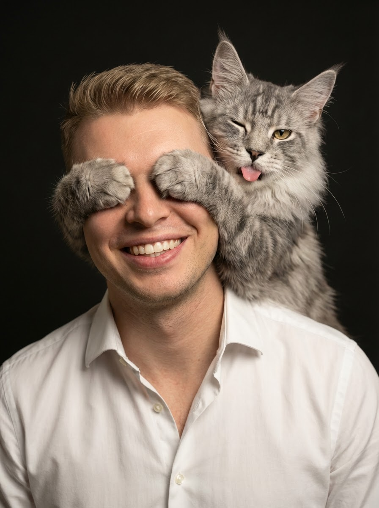

Курс «Figma to code»
Пошаговый алгоритм: как верстать макеты в Claude Code
Claude Code · Figma MCP · VS Code
Обо мне

9 лет
в дизайне
6+ лет
продуктовый дизайнер в Альфа-Банке
Без кода
раньше верстал на Webflow и Taptop — теперь верстаю без кода
Figma to code · Вебинар 1
02
На этой лекции
Пошаговый алгоритм, как верстать макеты в Claude Code
Figma to code · Вебинар 1
03
План лекции
01
02
03
04
По итогу у вас будет полный гайд, как верстать макеты с помощью нейронки
Figma to code · Вебинар 1
04
Про Claude Code
Он умеет работать с файлами вашего проекта: редактировать их, создавать, удалять, переносить и многое другое.
Figma to code · Вебинар 1
05
Про Claude Code
Claude или GPT в чате не способны долго удерживать контекст. Чтобы задать контекст разговора, нужно каждый раз закидывать туда кучу файлов и инструкций.
Видит папку вашего проекта, сам читает файлы и понимает контекст. Умеет интегрироваться с сервисами — Figma по MCP, Google Drive и другими.
Figma to code · Вебинар 1
06
Шаг 1 · Подписка
$20 / мес
Базовая подписка. Хватает на вёрстку одного сайта в неделю.
$100 / мес
В 20 раз больше токенов — для более глубокой разработки: сервисов и приложений.
Figma to code · Вебинар 1
07
Шаг 1 · Подписка
Лимиты токенов, которые обновляются через определённое количество времени:
Определённое количество токенов на 5 часов
Определённое количество токенов на 7 дней
Потратили лимит раньше времени — ждёте, пока он обновится. Как грамотно распоряжаться токенами — расскажем на курсе.
Figma to code · Вебинар 1
08
Шаг 2 · Рабочая среда
01
02
03
Figma to code · Вебинар 1
09
Шаг 2 · Рабочая среда
Самая популярная программа среди разработчиков — пишет код, управляет и показывает файлы любых расширений. Установим Claude Code внутрь неё как расширение: у самого приложения Claude Code нет файлового менеджера, поэтому работать так удобнее.
Figma to code · Вебинар 1
10
Шаг 2 · Рабочая среда
Чтобы показать сайт заказчику, друзьям и знакомым — нужен сервер, на котором хранятся файлы сайта
Ваш компьютер. Через него нельзя поделиться сайтом с кем-то другим
Бесплатное удалённое хранилище — сайтом можно поделиться с кем угодно
Figma to code · Вебинар 1
11
Шаг 2 · Рабочая среда
Чтобы Claude Code дотянулся до макетов, нужен мост между ним и Figma — MCP (Model Context Protocol)
Мост передаёт размеры, свойства и иерархию элементов — чтобы Claude Code смог сверстать макет
Нужен Pro или Образовательный аккаунт в Figma — для режима разработчика
Figma to code · Вебинар 1
12
Навык нейронки
На курсе поделимся проработанным скиллом, который поможет Claude Code верстать ваши макеты
Figma to code · Вебинар 1
13
Шаг 3 · Подготовка макетов
Лишние вложенные контейнеры, беспорядочные имена слоёв — всё это нужно убрать перед вёрсткой
Figma to code · Вебинар 1
14
Шаг 3 · Подготовка макетов
1 / 4
Claude Code плохо работает с фреймами. Ему легче считать позиционирование элементов, когда они лежат внутри автолэйаута.
Figma to code · Вебинар 1
15
Шаг 3 · Подготовка макетов
2 / 4
Claude Code прекрасно считывает компоненты и варианты — и видит анимацию между ними.
Figma to code · Вебинар 1
16
Шаг 3 · Подготовка макетов
3 / 4
Чем больше вы используете переменные и стили в макетах, тем точнее получится вёрстка.
Figma to code · Вебинар 1
17
Шаг 3 · Подготовка макетов
4 / 4
Благодаря системному неймингу элементов вы всегда сможете донести до нейронки правки — быстро и просто.
Figma to code · Вебинар 1
18
Шаг 4 · Подготовка анимаций
01
02
03
Figma to code · Вебинар 1
19
Шаг 4 · Подготовка анимаций
1 / 3
Берём секцию и копируем её на количество этапов анимации — в каждом этапе готовим своё состояние элементов.
Figma to code · Вебинар 1
20
Шаг 4 · Подготовка анимаций
2 / 3
Пошагово описываем изменение секции: что анимируется первым, что вторым, что третьим. Чем лучше «разжуём», тем точнее нейронка соберёт анимацию.
Figma to code · Вебинар 1
21
Шаг 4 · Подготовка анимаций
3 / 3
С первого раза обычно не получается так, как нужно. Описываем правки, пока нейронка не сделает всё правильно.
Figma to code · Вебинар 1
22
| Модуль | Что делаем |
|---|---|
| Основы вёрстки | HTML, CSS, JS и как технически устроен сайт |
| Настройка рабочей среды | Claude, VS Code, Claude Code, скилл, Figma MCP, GitHub |
| Подготовка макетов к вёрстке | UI-kit, чистка слоёв, нейминг, адаптив |
| Раскадровка анимаций | Ключевые состояния секций, промт анимации |
| Вёрстка сайта | Проект, макеты — ИИ-агенту, вносим правки |
| Оптимизация и публикация | Оптимизируем сайт, базовое SEO, публикуем на сервере |
Figma to code · Вебинар 1
23
Курс «Figma to code»
До встречи на вебинаре 2 — настройка рабочей среды